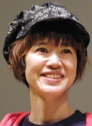

Fushigi Yamada or Kyoko Yamada is a Japanese voice actress. She is a graduate of Yokyo University odf Science. She is afiliated with 81 Produce.
- Gender: Female
- Birthday: November 11, 1959
- Hometown: Tokyo, Japan
- Real Name: Kyoko Yamada

|  |
Fushigi Yamada or Kyoko Yamada is a Japanese voice actress. She is a graduate of Yokyo University odf Science. She is afiliated with 81 Produce.
|
|---|
| Max |
|
Max is May's little brother. He is proud of his book smarts. He knows a lot about Pokemon. He carries a PokeNav to help find their way around Hoenn region. |